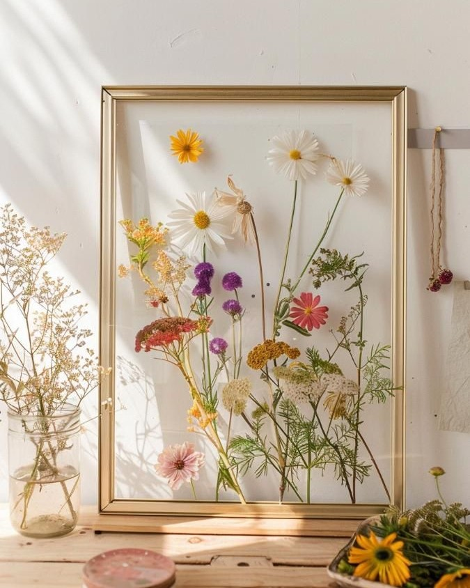
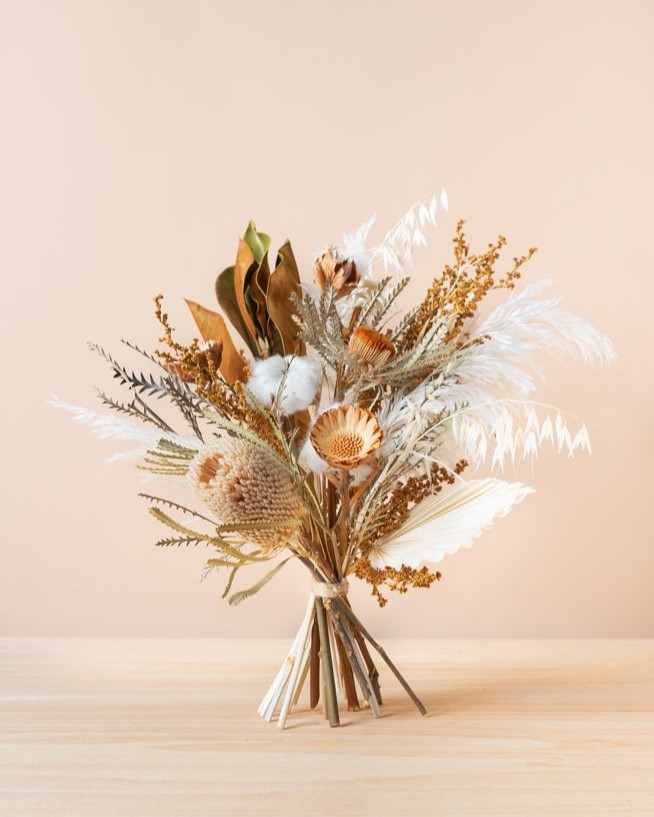
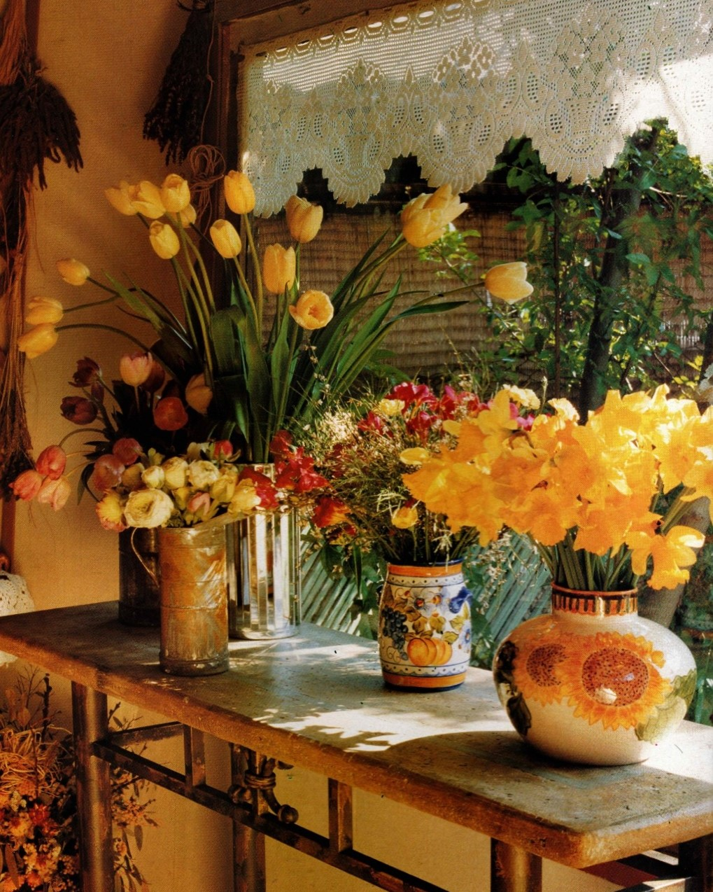
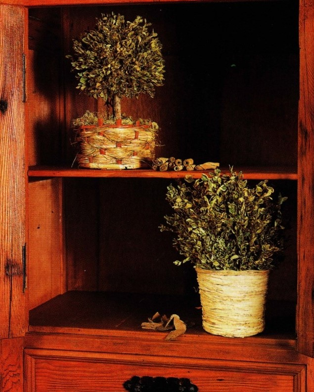
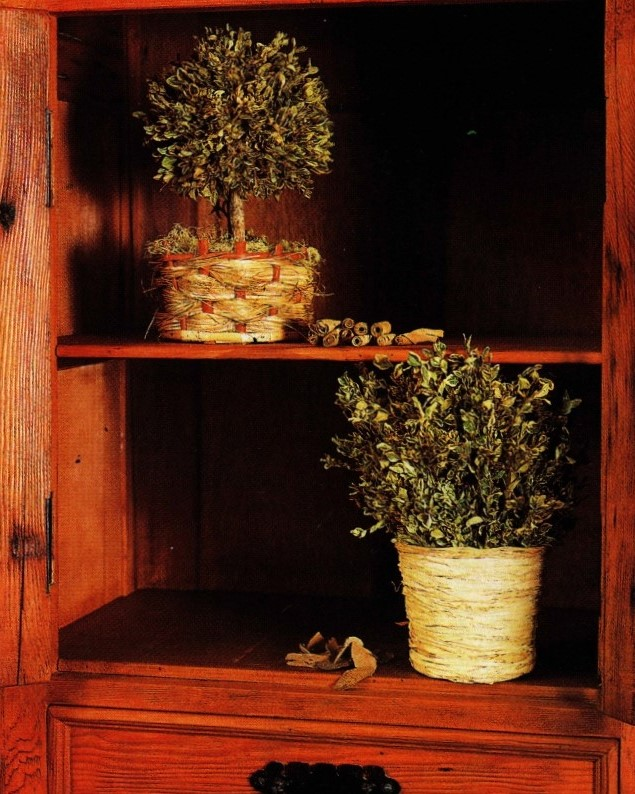
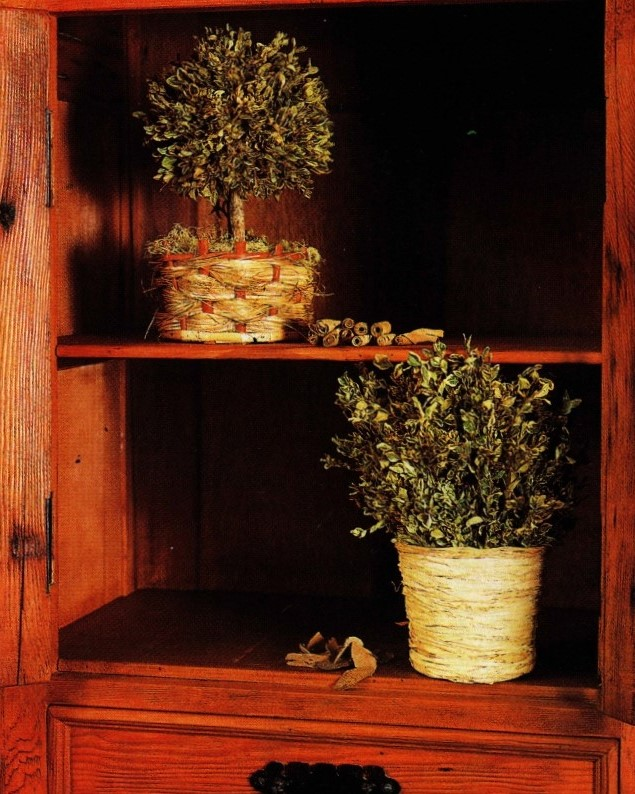

PRÁCTICA de Paula.
FLORES SECAS


Revista Paula
Paula es una revista chilena fundada en 1967, enfocada en temas de moda, cultura, belleza, y el papel de la mujer en la sociedad. Con una historia de innovación, ha sido un referente en el periodismo femenino, abordando desde tendencias hasta temas sociales y culturales relevantes. A lo largo de los años, Paula ha evolucionado, fusionándose con el diario La Tercera en 2018, manteniéndose como un ícono en la escena editorial chilena
¿Qué aprenderás?
En este sitio aprenderás a preservar flores secas, crear arreglos decorativos, prensar flores y frutas, y trabajar con resina. También descubrirás cómo hacer velas artesanales y bandejas aromáticas, desarrollando proyectos creativos que combinan naturaleza y diseño.
Galería de imágenes

 


